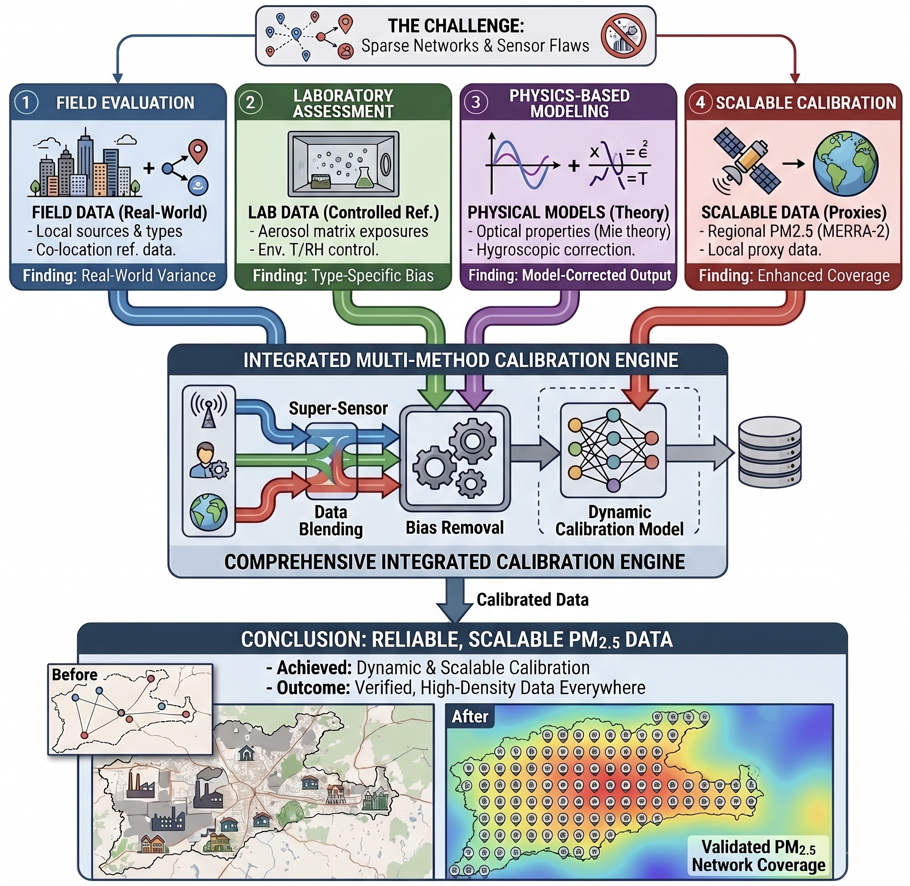

Research
As long as I can remember, I always wanted to be a researcher

Research interests
My work sits where aerosol physics, sensing hardware and data science meet, and it is aimed at one practical end: particulate matter measurements that people can act on.
- Sensor characterisation and validation in controlled environments
- Machine learning for sensor calibration
- Meteorological data integration and prediction
- Aerosol source apportionment and factor analysis
- Urban IoT air quality monitoring networks
- Spatiotemporal analysis of particulate matter, with an India focus
- Emission control technologies, industrial and indoor
- Human exposure and health impact assessment

From sparse networks to reliable PM2.5 Mass Estimates
My doctoral work approached low-cost sensor (LCS) calibration from four directions at once, field, laboratory, physical model and satellite proxy, and fed all four into a single calibration engine. What came out of it:
- Developed the first framework to assess the spatial transferability of calibration models in a distributed sensor network
- Provided one of the first systematic chamber-based evaluations linking LCS number and mass response to independently controlled aerosol properties and environmental conditions
- Showed how the same aerosol produces different biases in the PMS5003 and OPC-N3, because of differences in optical geometry, binning and internal mass-conversion algorithms
- Established a first-principles pathway for simulating LCS response using Mie scattering, κ–Köhler growth and sensor-specific optical geometry; a route toward self-calibrating sensors
If you’d like to collaborate, feel free to reach out.